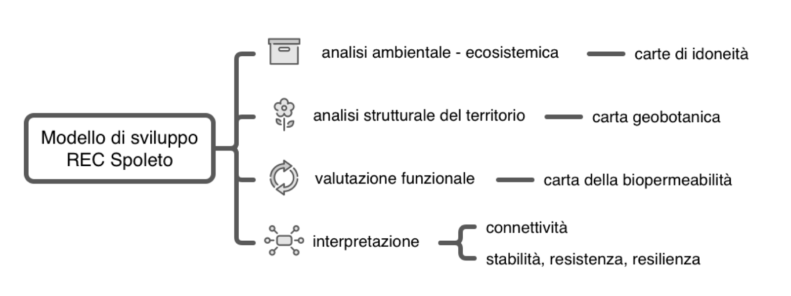

Capitolo 3 Metodologie
3.1 Approccio metodologico generale
Dal punto di vista metodologico, il piano delle attività è stato condotto sempre in accordo con lo schema concettuale di seguito riportato e già presentato nel 2025 che definisce le principali fasi del lavoro (Fig. 3.1).

Figure 3.1: Modello di sviluppo attività.
In particolare, in continuità con quanto già impostato in precedenza, sono stati sviluppati nuovi elaborati e approfondimenti analitici orientati all’analisi della struttura e connettività ecologica del paesaggio mediante l’applicazione congiunta della Morphological Spatial Pattern Analysis (MSPA) e delle metriche di frammentazione spaziale. Questa nuova interpretazione tiene conto del passaggio delle precedenti Unità di Paesaggio (UdP) alle nuove Unità Funzionali (UF). Inoltre, è stata sviluppata una valutazione delle infrastrutture verdi e blu dell’unità urbana, ponendo come base per la verifica preliminare dei criteri di vivibilità e sostenibilità del territorio la regola 3–30–300 (Konijnendijk 2023).
3.2 Suddivisione del territorio in unità funzionali
La definizione di unità territoriali rappresenta un passo fondamentale nella pianificazione territoriale. Come previsto nell’Art.32 del TITOLO IV delle Norme Tecniche di Attuazione del Piano Regolatore Generale - Parte Strutturale, il Paesaggio Comunale attualmente si articola in 14 Unità di Paesaggio in coerenza con le Unità del Sistema Paesaggistico proposte nell’ambito del PTCP. L’analisi dell’attuale configurazione delle Unità di Paesaggio (UdP) ha evidenziato un disallineamento con i confini amministrativi consolidati. In previsione della programmazione del nuovo PRG, si intende superare tale elemento di criticità attraverso l’individuazione di nuove unità di suddivisione del territorio, denominate Unità Funzionali (UF).
3.2.1 Approccio metodologico e basi dati
L’approccio metodologico adottato per la definizione delle nuove UF, persegue due obiettivi principali: i) garantire una coerenza amministrativa che si basa sull’allineamento delle UF con i confini esistenti di frazioni e località e ii) assicurare l’identificazione di ambiti territoriali che presentino caratteristiche paesaggistiche ed ecologico-funzionali il più possibile omogenee. Tale metodologia ha quindi come obiettivo la continuità dell’organizzazione amministrativa esistente e la suddivisione del territorio in ambiti funzionali che mantengano una propria identità e riconoscibilità.
I supporti informativi di cui si è tenuto conto nel processo di formulazione di questa prima proposta per le UF sono:
- unità di paesaggio
- carta delle macroaree
- carta delle frazioni e località
- modello di elevazione digitale del terreno
- carta CORINE Land Cover (vers. 2018)
- carta geobotanica e uso del suolo aggiornata nell’ambito delle attività per lo sviluppo della rete ecologica comunale
- carta della rete idrografica comunale
- carta dei bacini idrografici
Per l’individuazione delle UF come base di partenza è stata utilizzata la carta delle UdP che già identifica ambiti territoriali coerenti e riconoscibili. Questi ambiti sono stati successivamente estesi o contratti in funzione della carta delle frazioni e località, che ha guidato la rimodellazione dei confini. Per garantire coerenza amministrativa si è cercato di assegnare ogni frazione a un’unica UF. Tale assegnazione univoca non è stata tuttavia sempre possibile e pertanto alcuni casi dovranno essere oggetto di ulteriore analisi e approfondimento.
In particolare le frazioni di:
- Bazzano superiore (2)
- Cerqueto (2)
- Morro (2)
- Perchia (2)
- Pompagnano (2)
- Poreta (2)
- San Venanzo (2)
- Sant’Angelo in Mercole (2)
- Silvignano (2)
attualmente ricadono in due unità funzionali e nel caso di:
- Eggi (3)
si arriva a tre diverse UF.
Per l’assegnazione di ciascuna località a un’unità funzionale è stato adottato il seguente approccio metodologico:
- quando il poligono di una località ricadeva interamente all’interno di una UdP, l’assegnazione alla rispettiva UF è stata diretta.
- nei casi in cui il poligono della località insisteva su più UdP, per l’assegnazione alla relativa UF sono state considerate le sue caratteristiche altitudinali, geobotaniche e di uso del suolo.
Infine, per garantire una maggiore coerenza funzionale, sono state considerate anche le macroaree urbane. Nella collocazione delle località all’interno delle UF si è tenuto conto di questo aspetto, privilegiando l’aggregazione delle porzioni urbanizzate al fine di concentrare in poche unità omogenee i sistemi insediativi più consolidati.
3.3 Analisi della struttura e della connettività del paesaggio
L’indagine sulla struttura e sulla connettività del paesaggio è stata condotta integrando i principi della Morphological Spatial Pattern Analysis (MSPA)(Vogt 2025) con le metriche di frammentazione spaziale elaborate da (Jaeger 2000). L’analisi è stata eseguita disaggregando le porzioni territoriali in base alle Unità Funzionali del territorio spoletino. Ciò per confrontare direttamente l’assetto ecologico dei diversi ambiti, ma anche per supportare la pianificazione delle azioni prioritarie necessarie per ciascuna unità con l’obiettivo finale di incrementare la permeabilità della matrice territoriale complessiva e rafforzare l’efficienza della rete ecologica comunale.
È ampiamente consolidato, infatti, il fatto che la pianificazione territoriale in ambito urbano e periurbano richieda un approccio integrato, in grado di valorizzare la diversità ambientale a tutela della biodiversità locale e di promuovere uno sviluppo sostenibile del territorio. L’eterogeneità degli habitat costituisce il presupposto fondamentale per garantire condizioni idonee alle specie autoctone e preservare la continuità dei corridoi ecologici (Battisti 2004; Vilenica et al. 2020).
In questo contesto, la metodologia MSPA offre il vantaggio di sintetizzare la complessità del mosaico paesaggistico in un modello concettuale articolato su due componenti chiave:
- Sistema degli Habitat: che rappresenta il nucleo ad alto valore ecologico e conservazionistico, derivante dall’integrazione tra le diverse categorie geobotaniche e coperture del suolo. In altri termini, questo sistema costituisce l’insieme dei tasselli ad elevata idoneità in grado di supportare le funzioni vitali delle specie target e favorirne gli spostamenti.
- Matrice di Background: che comprende le porzioni di territorio con finalità produttive a prevalente impronta antropica, o a minore naturalità, caratterizzate da condizioni ambientali generalmente subottimali. Essa agisce da spazio di transizione e tendenzialmente presenta una limitata capacità di supporto diretto per la fauna locale.
L’applicazione di questo schema concettuale permette di contestualizzare le metriche morfologiche MSPA (Core, Bridge, Islet, Edge, ecc.) all’interno di un quadro interpretativo coerente e aiutare i processi della pianificazione indirizzandoli verso l’individuazione delle aree prioritarie per la conservazione e quelle mirate alla deframmentazione e potenziamento della connettività ecologica.
Per questa sintesi basata sulle Unità Funzionali spoletine, le categorie MSPA sono state aggregate in 7 macro-categorie morfologiche fondamentali:
- Core: le aree interne e contigue della matrice naturale, con ruolo primario di serbatoio di biodiversità e habitat biologico principale.
- Islet: piccoli frammenti isolati e discontinui di habitat naturale che non raggiungono la dimensione minima di area core.
- Perforation: i margini e i varchi interni alle aree Core, generati da discontinuità della copertura vegetale.
- Edge: la fascia di transizione e margine esterno che delimita le aree Core verso il background o la matrice antropizzata.
- Loop: corridoi o elementi lineari che collegano un’area Core a se stessa (corridoi interni o di auto-connessione), incluse le variazioni di margine e perforazione (Loop in Edge, Loop in Perforation).
- Bridge: elementi lineari e corridoi strutturali che collegano due o più aree Core distinte, rappresentando la spina dorsale della connettività ecologica funzionale.
- Branch: corridoi lineari o bracci che dipartono da un’area Core ma terminano a fondo cieco, senza connettersi ad altri elementi. Queste porzioni evidenziano di fatto connessioni interrotte che se opportunamente riconosciute e valorizzate potrebbero fornire con interventi minimi un grado di connettività molto superiore.
Per ciascuna Unità Funzionale e per ciascuna delle 7 macro-categorie MSPA sono state calcolate tre metriche chiave:
- Area Totale: espressa in ettari (ha), rappresenta l’estensione complessiva occupata da ciascuna tipologia MSPA all’interno dell’unità funzionale.
- Numero di Patches: indica il conteggio totale di poligoni/frammenti distinti appartenenti a ciascuna categoria. Questo valore è rilevante poiché il rapporto tra Area Totale e Numero di Patches esprime la dimensione media degli elementi del mosaico paesaggistico.
- Effective Mesh Size: definita secondo la formulazione di (Jaeger 2000), calcola la dimensione utile di maglia ed è un indicatore di connettività e integrità del paesaggio:
\[S_{eff} = \frac{\sum_{i=1}^{n} A_i^2}{A_{tot\_unita}}\]
Dove:
- \(A_i\) è la superficie del singolo poligono (patch) appartenente a una determinata classe MSPA.
- \(A_{tot\_unita}\) è la superficie complessiva dell’Unità Funzionale di riferimento.
Per l’interpretazione del significato ecologico dell’indice di Effective Mesh Size - \(S_{eff}\) occorre tenere presente che a parità di superficie totale occupata da una categoria, un valore di Effective Mesh Size (\(S_{eff}\)) più elevato indica una maggiore continuità spaziale e aggregazione dei tasselli (bassa frammentazione). Al contrario, un valore di \(S_{eff}\) molto basso riflette una forte polverizzazione dell’habitat in frammenti di ridotte dimensioni, aumentando la probabilità di isolamento ecologico.
3.4 Analisi del sistema verde e blu urbano
L’indagine ha preso in esame la composizione e l’organizzazione spaziale dei sistemi verdi e blu che caratterizzano il territorio comunale di Spoleto, utilizzando come base conoscitiva il tematismo del verde pubblico e privato, comprensivo delle infrastrutture blu.
Attraverso questo studio, finalizzato a descrivere estensione, distribuzione, livello di continuità e relazioni funzionali e spaziali tra le diverse componenti, vengono definiti gli elementi strutturali necessari per condurre una valutazione preliminare del grado di conformità del contesto urbano rispetto ai parametri della regola 3–30–300.
Per approfondire la configurazione, il ruolo funzionale e le caratteristiche generali di tali componenti, è stata eseguita un’analisi di paesaggio basata sugli indicatori del pacchetto software landscapemetrics (Hesselbarth et al. 2019). Tale libreria riprende le metriche storicamente implementate in FRAGSTAT (McGarigal 2015) e ne estende le potenzialità per un utilizzo multipiattaforma.
Nell’ambito di questa relazione sono state considerate le seguenti metriche, risultate particolarmente efficaci per una descrizione analitica dell’assetto generale dell’area.
Elenco delle variabili landscapemetrics esaminate:
- LPI (Largest Patch Index): Misura la percentuale del paesaggio occupata dalla patch più estesa appartenente a una determinata classe. È un indicatore di dominanza e continuità spaziale. Nel caso delle infrastrutture verdi, un LPI elevato suggerisce la presenza di un grande nucleo verde capace di sostenere funzioni ecologiche rilevanti.
- Superficie Mediana (Median Patch Area): Rappresenta la dimensione della patch che divide la distribuzione in due metà: il 50% delle patch è più piccolo e il 50% è più grande. Fornisce una misura robusta della dimensione tipica delle patch, meno influenzata dai valori estremi rispetto alla superficie media.
- PD (Patch Density): Numero di patch presenti per unità di superficie (solitamente per 100 ha). È una delle metriche più utilizzate per valutare il livello di frammentazione del paesaggio. Va sempre interpretata insieme alle dimensioni delle patch.
- AI (Aggregation Index): Misura il grado con cui le celle o le patch della stessa classe risultano spazialmente aggregate. Descrive quanto gli elementi della stessa classe tendano a formare blocchi continui anziché essere distribuiti in modo frammentato.
- COHESION (Patch Cohesion Index): Misura il grado di connessione fisica delle patch appartenenti a una stessa classe. È particolarmente utile per comprendere se gli habitat o le infrastrutture verdi mantengono una continuità funzionale su scala territoriale. Nel contesto urbano, valori molto elevati possono indicare che numerosi elementi verdi, pur frammentati, risultano comunque parte di una rete spazialmente connessa.
- CONTAG (Contagion Index): Misura il grado di aggregazione complessiva delle classi presenti nel paesaggio considerando tutte le tipologie di copertura. Descrive la configurazione generale del paesaggio e il livello di mescolamento tra le diverse classi.
- CLUMPY (Clumpiness Index): Valuta quanto una classe sia aggregata rispetto a una distribuzione casuale. È una misura molto efficace per confrontare il grado di aggregazione tra classi con abbondanze molto differenti.
- CORE (Core Area): Misura la superficie situata oltre una determinata distanza dal margine della patch (edge depth). È una metrica fondamentale per valutare la qualità ecologica delle aree verdi, poiché molte specie e funzioni ecosistemiche richiedono habitat interni protetti dalle perturbazioni provenienti dall’esterno.
- ENN (Euclidean Nearest Neighbor Distance): Misura la distanza lineare tra una patch e la patch più vicina appartenente alla stessa classe. È una delle metriche più utilizzate per valutare la connettività potenziale. Non misura l’effettiva connessione ecologica, ma la vicinanza spaziale tra elementi dello stesso tipo.
3.4.1 Verifica preliminare della regola 3-30-300
La regola 3-30-300 propone tre soglie per valutare la dotazione di verde urbano: almeno tre alberi visibili da ogni abitazione, il 30% di copertura arborea per quartiere e uno spazio verde pubblico raggiungibile entro 300 m (Konijnendijk 2023). In questo studio la regola è stata applicata come verifica preliminare e non come accertamento puntuale e rigoroso di conformità. La base informativa disponibile, costituita dalla cartografia del verde e dalla sua rasterizzazione su maglia 5×5 m, consente infatti di valutare le tre componenti con livelli di affidabilità molto diversi. Il criterio guida è stato quindi stabilire, per ciascuna soglia, che cosa i dati permettessero di verificare e che cosa potesse essere solo ipotizzato, evitando di attribuire alla cartografia una precisione che per sua natura non possiede.
La componente 3 presuppone una verifica alla scala della singola abitazione, con il censimento delle alberature e il calcolo dei coni di vista. La cartografia utilizzata rappresenta il verde per poligoni e non individua i singoli alberi, che sono stati solo parzialmente censiti, per cui la soglia non è stata verificata in senso stretto. Si è adottato un criterio indiretto e qualitativo: la presenza di un patrimonio verde diffuso e di una buona copertura arborea nel nucleo urbano è stata considerata indicativa di una probabile conformità, da confermare eventualmente con rilievi dedicati che potranno essere programmati per il futuro anche in relazione al piano di rinnovamento del verde pubblico.
Per la componente 30 l’unità di analisi è costituito dalla ripartizione dell’unità funzionale urbana in frazioni e località e l’indicatore è la percentuale di superficie occupata da infrastrutture verdi e blu. Si tratta di un indicatore approssimato per eccesso, perché include anche verde non arboreo e componenti blu e quindi tende a sovrastimare la copertura arborea effettiva. I valori sono stati perciò letti in modo graduato rispetto alla soglia, per esempio considerando il superamento del 15% come metà del valore atteso, e non in modo dicotomico. Nelle frazioni a bassa densità abitativa il confronto è stato inoltre contestualizzato, poiché la presenza di superfici agricole, boschive o naturali rende poco appropriata un’applicazione rigida del 30%.
La componente 300 è quella verificabile con maggiore robustezza, perché dipende dalla localizzazione e dall’estensione delle grandi aree verdi.
Il procedimento si articola in tre passaggi:
- sono state selezionate le superfici di verde pubblico di dimensione prossima o superiore all’ettaro, ritenute adeguate a un uso ricreativo e a una funzione ecologica minima;
- intorno a ciascuna è stato tracciato un buffer di 300 m, assunto come distanza percorribile a piedi;
- è stata quantificata l’estensione del territorio compreso nei buffer, con e senza il corridoio fluviale del Torrente Tessino e di altri aree blue, per valutarne il contributo.
Le porzioni esterne ai buffer sono state interpretate come aree in cui la popolazione residente non dispone di uno spazio verde adeguato a “distanza pedonale”. Elementi di naturalità di piccola scala, come la zona umida di Madonna di Lugo, sono stati considerati separatamente, in ragione del loro ruolo locale.
Nel complesso, l’approccio privilegia la trasparenza sui limiti dei dati rispetto alla completezza formale della verifica. L’esito va inteso come un quadro di orientamento per individuare le aree prioritarie di approfondimento, e non come una certificazione del rispetto della regola.
3.5 Attività di divulgazione e Citizen Science
3.5.1 Walkshop lungo la Greenway Valle Spoletana
La componente di coinvolgimento della cittadinanza è stata concepita non come un’appendice divulgativa del lavoro scientifico, ma come parte integrante del disegno metodologico. L’efficacia delle campagne di citizen science dipende infatti dalla qualità della relazione tra chi è impegnato nella produzione di elementi conoscitivi con metodo scientifico e chi vive il territorio oggetto di studio. I cittadini che comprendono perché un’infrastruttura verde viene analizzata e che riconoscono in essa un luogo di cui hanno esperienza diretta, sono più disposti a contribuire con osservazioni, a mantenere nel tempo la partecipazione e a interpretare i risultati come qualcosa che li riguarda e da cui possono trarre vantaggio e gratificazione. Per questo l’attività è stata impostata secondo un modello dialogico-conversazionale e non secondo l’approccio unidirezionale in cui l’esperto trasferisce informazioni a un pubblico ritenuto privo di conoscenze.
Lo strumento scelto è stato il walkshop, un incontro in cui la discussione avviene camminando lungo il sito di interesse. Percorrere la Greenway Valle Spoletana insieme ai partecipanti ha permesso di ancorare i temi ambientali a ciò che si vede, si sente e si attraversa, collocando le questioni ecologiche e urbanistiche nel contesto reale in cui assumono il loro vero significato. Questa scelta si basa sul riconoscimento del valore del sapere esperienziale dei residenti o di coloro che frequentano le aree, che magari conoscono usi, criticità e trasformazioni che sono avvenute nel corso del tempo meglio di quanto possa emergere da un’analisi spaziale prodotta con dati asettici, inevitabilmente incompleti della memoria delle piccole cose. Il camminare in gruppo favorisce inoltre uno scambio informale e orizzontale, in cui domande e osservazioni dei partecipanti orientano la discussione quanto i contenuti proposti dai ricercatori/divulgatori.
Il questionario costituisce un ulteriore strumento conoscitivo di tipo partecipativo e svolge una duplice funzione. Da un lato rileva percezioni, conoscenze e atteggiamenti rispetto a nove tematiche legate all’area. Le domande sono state somministrate prima dell’incontro, con una scala di intensità da 1 a 5, e riproposte al termine dell’evento in forma semplificata, con risposta sì/no. Dall’altro rappresenta di per sé un momento di riflessione, perché invita i partecipanti a esplicitare e rivedere le proprie opinioni. Il confronto tra le due rilevazioni va quindi inteso come indicazione di un possibile cambiamento di prospettiva, e non come misura dell’effetto dell’iniziativa. Occorre tenere conto anche del fatto che il campione è, per sua natura, autoselezionato: partecipa chi è già incline a interessarsi al tema. Il disegno privilegia quindi la comprensione qualitativa dei cambiamenti di prospettiva rispetto all’inferenza statistica, e l’analisi quantitativa è mantenuta volutamente descrittiva.
Un ruolo altrettanto rilevante è affidato alle domande aperte, in cui i partecipanti indicano che cosa manterrebbero, che cosa cambierebbero e che cosa renderebbe la Greenway più utile. Questi contributi forniscono a coloro che si occupano di pianificazione e gestione informazioni sulle priorità locali e restituiscono ai cittadini il segno di essere stati ascoltati. Tale reciprocità è una condizione necessaria perché il coinvolgimento non resti episodico e si traduca in collaborazione duratura.
Nel complesso, l’attività è stata pensata come un primo passo di un processo più ampio di costruzione di fiducia e di competenze condivise, in cui la comunicazione scientifica prepara il terreno a una partecipazione attiva alla raccolta dei dati, aspetto fondamentale per la futura gestione di quel territorio.